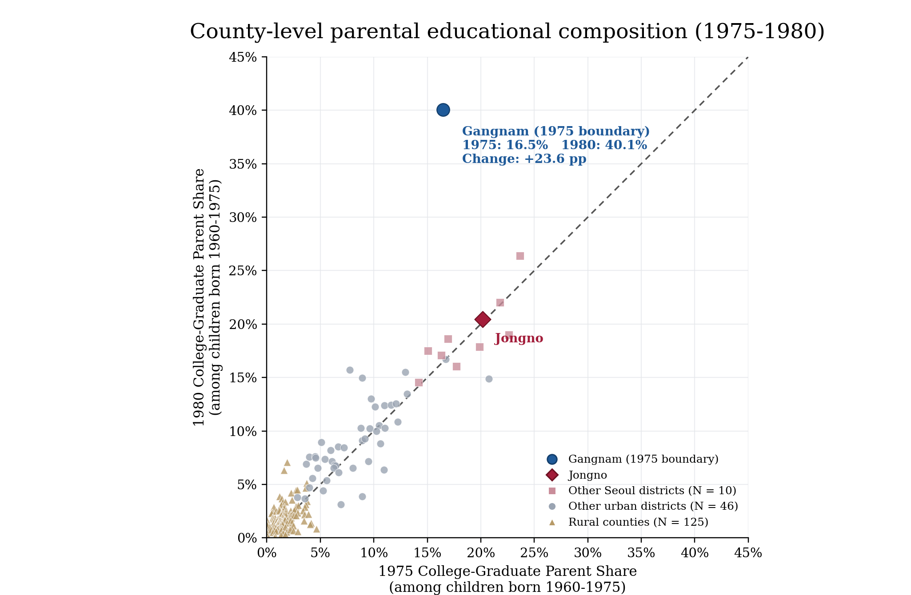
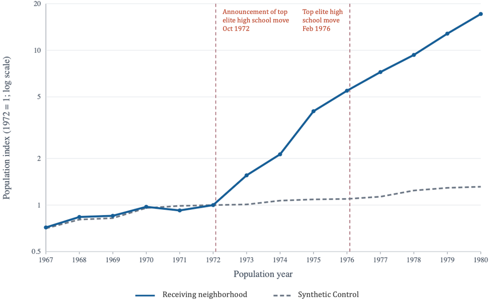
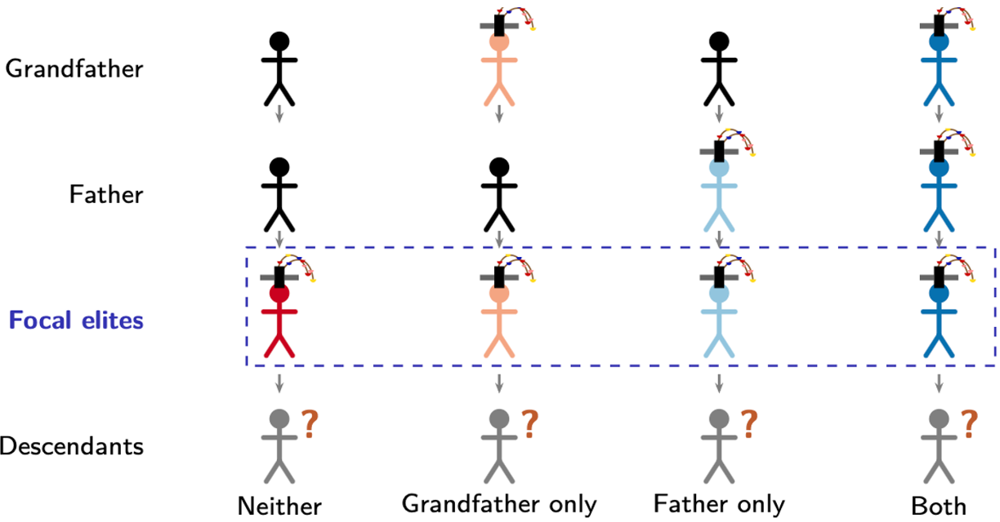
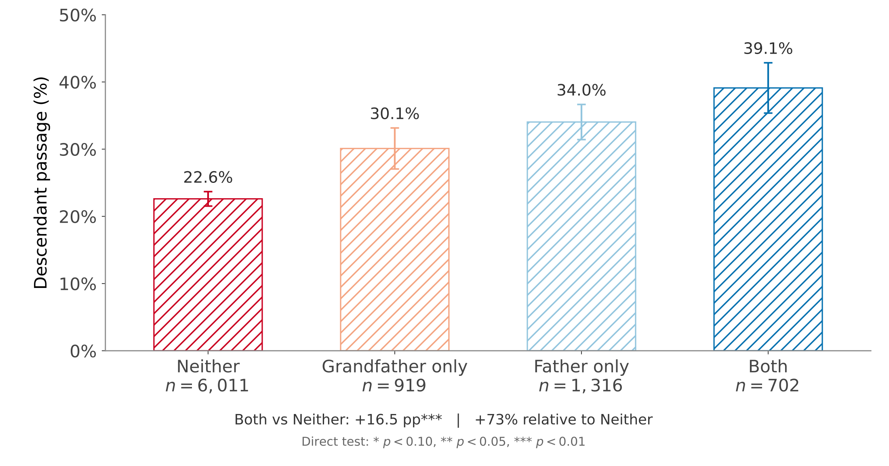

Selected Work in Progress
(as of Oct 2026; project descriptions are intentionally brief to allow for twists and turns)
Moving Opportunities? South Korea's Elite High School Relocation (1974–1987)
Can perceptions of opportunities for children shape neighbourhood segregation by family background and upward mobility? I study this question in the historical context of South Korea, when top positions in society disproportionately originated from a small number of elite high schools. After location-based admission reforms, authoritarian governments forcibly relocated these schools from Seoul’s urban core district to then-rural outskirts (1976-1987). I document four descriptive facts showing that families highly valued access to elite schools and that destination regions became rapidly stratified by family background following the school moves. I then estimate the reduced-form effects of prestigious school departures and arrivals on the upward mobility of native residents.


Intergenerational Transmission of Elite Status in Meritocracy: Joseon Korea (15-19C)
How does class shape the intergenerational transmission of elite status under meritocracy? We study this question in the historical context of Joseon Korea (15th-19th), where elite status was predominantly attained through competitive civil service examinations for nearly five centuries. By tracing both the ancestors and descendants of elite bureaucrats, we document substantial, persistent class gaps in elite transmission among individuals who attained the same elite status through the same examination. We then investigate the mechanisms underlying these disparities, including networks, ability, cultural capital, and other sources of advantage.

